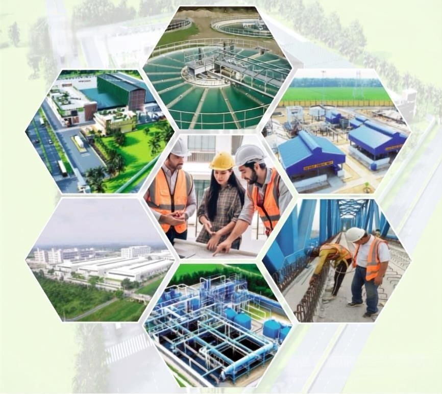

Who we are
A proud tradition of service as a contractor since 2007
M/S Zahura & Son’s is a proprietorship firm founded and led by MD Mohin Uddin. Rooted in the Bangladeshi construction sector since 2007, we are built on personal accountability and delivering projects with genuine passion.
We have grown through word-of-mouth and the successful completion of challenging projects, combining skilled local craftsmanship with effective, modern project management.

About us
Direct oversight on every site
Unlike large, layered corporations, you partner directly with the owner. MD Mohin Uddin’s vision is the driving force behind every blueprint and every concrete pour.
Singular focusUncompromised attention to quality control and project specifics.
Agile decision-makingSwift solutions and flexibility to adapt to the challenges of the local construction environment.
Personalized serviceA commitment to the client relationship that extends beyond the contract.
Contact us